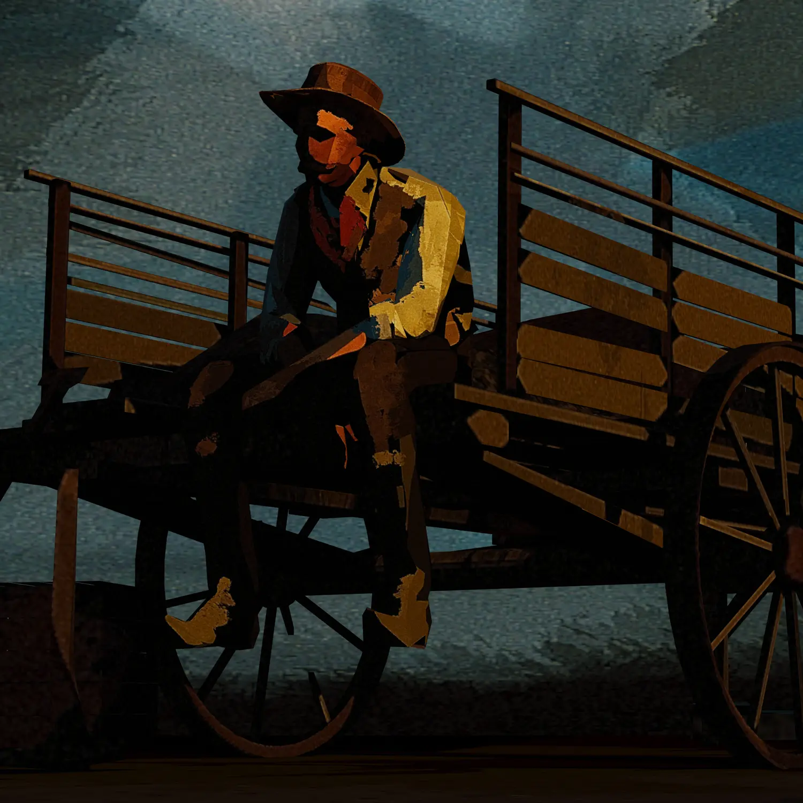

Call Me Calamity
Réalité Virtuelle & Théâtre Immersif
Mon rôle : Sound Design, Composition musicale
Call Me Calamity emmène les spectateurs au cœur du mythe américain et leur fait découvrir la naissance de la première figure féminine de l'Ouest dans un dispositif à la rencontre du théâtre immersif et de la réalité virtuelle.
La combinaison de motion capture et la réalité virtuelle donnent à l'actrice les outils pour se mettre dans la peau de Calamity Jane. Alors qu'elle raconte son histoire, la réalité virtuelle lui permet de changer d'environnement et d'enfiler de nouveaux costumes en claquant des doigts.

La conception sonore accompagne le récit de Calamity Jane à travers différentes atmosphères emblématiques du far ouest. Elle compose, au même titre que la création visuelle, un vrai décor au sens théâtral. L'approche du sound design minimaliste mais à forte puissance évocatrice permet aux participants de mobiliser leur imaginaire afin de se plonger personnellement dans les histoires de la conteuse.
Crédits
- Écriture et réalisation
- Sam Lecoeur
- Production
- Voyelle Acker, Vincent Guttmann, Rémi Large
- Création visuelle
- Claire Allante
- Musique
- Alexandre Bobe, Jean Le Bellego
- Sound design
- Alexandre Bobe, Jean Le Bellego
- Actrices
- Naïs El Fassi, Claire Saumande Karageuzian